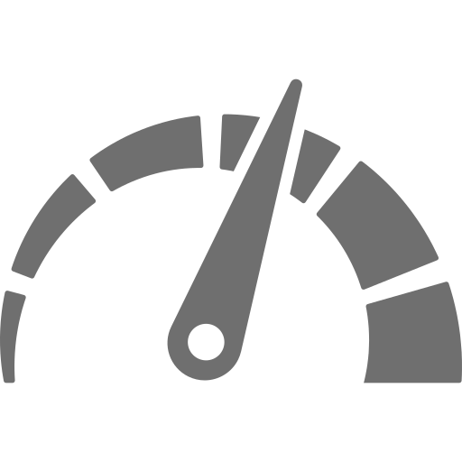

<section class="traject-info-con">
    <label *ngIf="data_service.carTrackData.length==0">Bu tarixdə məlumat tapılmadı</label>
    <mat-tab-group [animationDuration]="0" *ngIf="data_service.carTrackData.length" (selectedTabChange)="tabChange($event)">
        <mat-tab label="Player">
            <div class="player-con">

                <div class="img-con">
                    
                    
                    <select name="" id="" [(ngModel)]='x' [value]="x">
                        <option value="1">1x</option>
                        <option value="2">2x</option>
                        <option value="4">4x</option>
                        <option value="8">8x</option>
                    </select>
                    <div class="data-con">
                        
                        <label>{{data_service.carTrackData[i][2]}}</label>
                        
                        <label>{{data_service.carTrackData[i][3]}}</label>

                    </div>
                </div>

                <mat-slider min="0" [max]="data_service.carTrackData.length" step="10" (input)="updateSetting($event)"
                    >
                    <input matSliderThumb [(ngModel)]="i">
                </mat-slider>
            </div>
        </mat-tab>
        <mat-tab label="Speed chart">
            <div id="main" class="chart-box"></div>
        </mat-tab>
        <mat-tab label="Battery chart">
            <div id="main" class="chart-box"></div>
        </mat-tab>
    </mat-tab-group>


</section>